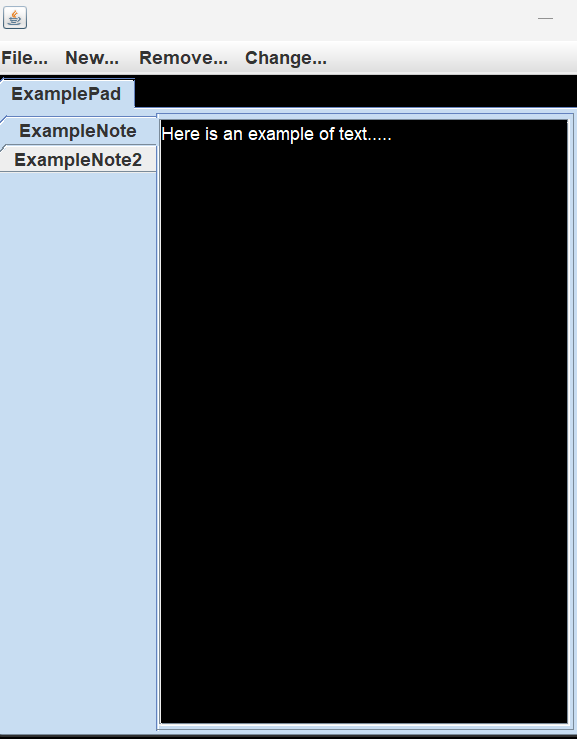

As a long time user of Microsoft's Notepad, I adored its simplicity and ease of use but I was quite annoyed with the lack of in-app file management. Using an external file manager to organize my files and folders for my notes was incredibly tedious and a big hassle. Thus, NotePad was born!
I wanted it to have the same simplistic look and feel of the original, but with the added feature of using an in-app GUI to add, move, and delete my Notes. All of my Notes would then be organized into Pads which could also be created and deleted.
Overall there were three components that had to be implemented for the app to work: a model, some type of data persistence, and a GUI.
For the model, I settled on having some type of Pad manager which would contain a list of Pads. Since this manager was used throughout the program, I made the decision to create it as a Singleton class. In retrospect, I believe that this was unnecessary but I will get more into it in the critiques section.
With regards to data persistence, I used a library to read and write the Pads and their respective Notes to and from a file. This portion was quite simple and easy to implement.
The GUI was arguably the hardest portion of this project. I had virtually no experience with GUI creation and the Java Swing library. I eventually got the hang of it but the process was quite a pain since frontend code is significantly difficult to debug and even worse to test as opposed to backend code. I wasn't too happy with the end result but I was satisfied at the very least.
One major mistake that I made during the design of this project was the use of the Singleton pattern for my PadManager. It made testing quite a hassle and took a fair amount of my time. Going back, I would definitely just stick to a regular class where upon instanciation, the object would just copy all of the data from the data folder. Other than that I am quite pleased with the end result given that this was my first "real" project.
